Практичні курси · журнал «ДентАрт» 2013 №1 (70)
Композитні піднебінні вініри для відновлення зубів з патологічним стиранням
COMPOSITE PALATAL VENEERS TO RESTORE A CASE OF SEVERE DENTAL EROSION
У статті розглядається випадок лікування пацієнта з класом III за класифікацією ACE з патологічним стиранням зубів (ACE — anterior clinical erosive classification, класифікація, яку запропонувала Ф. Вайлаті). Запропоновано варіант, коли верхні передні зуби пацієнта, які, здавалося б, мають бути девіталізовані і відновлені коронками, були просто відновлені композитними піднебінними вінірами. Трирічне спостереження підтверджує отриманий естетичний, механічний і біологічний успіх.
In this article the treatment of a ACE class III patient affected by severe dental erosion is illustrated. His maxillary anterior teeth, supposed to be devitalized and restored with crowns, were simply repaired by means of composite palatal veneers.
The 3-year follow-up confirms the esthetic, mechanical and biological successes obtained.
Вступ
Дуже часто пацієнти, котрі страждають стиранням зубів, не проходять негайного лікування, що в подальшому робить боротьбу зі стиранням нелегким завданням.
Деякі клініцисти вважають стирання більше фізіологічним процесом, пов'язаним з віком, ніж патологією, яка вимагає негайного лікування. Інші лікарі, навпаки, вважають це проблемою, але не можуть запропонувати пацієнтові повну реабілітацію ротової порожнини, особливо на ранніх стадіях захворювання, чекаючи серйозніших руйнувань для обґрунтування втручання. Сьогодні завдяки адгезивній техніці стирання зубів може бути призупинене і руйнування зубів сповільниться навіть за мінімального втручання в кожен зуб при виконанні реставрацій.1-22
Ключовим чинником, що дозволяє використати цей підхід, є збільшення вертикального розміру оклюзії (VDO), необхідне майже в кожному випадку для отримання достатнього міжоклюзійного простору, щоб уникнути препарування зубів.
Нова філософія «додавати, а не видаляти» передбачає відносно не дуже міцні реставрації, котрі, можливо, вимагають частішого обслуговування, але повністю зберігають інтактною оригінальну структуру зуба, розташовану під ними.
До того ж ці реставрації значно дешевші, оскільки не вимагають ендодонтичного втручання або подовження клінічної коронки зуба, вони недорогі, і їх обслуговування доступне, особливо при використанні композитних матеріалів (фото 1).
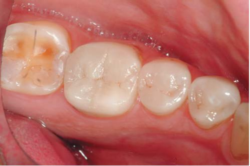
На думку авторів, стоматологічна спільнота має звертати більше уваги на збереження тканин зуба — так званий біологічний успіх, ніж на цілі гарантування своєї роботи.
Вітальний зуб, уперше покритий коронкою, може прослужити 10 років, але якщо той же зуб втрачає життєздатність і тканини зуба, що залишилися, не такі надійні, бо відсутній ферул, то чи може десятирічний термін служби бути гарантованим для нової реставрації?
Здатність лікаря розділити ці дві парадигми (біологічний успіх проти механічного) має бути засадничою, і перш ніж запропонувати екстремальне консервативне лікування, пацієнт повинен прийняти той факт, що реставрації менш міцні і, ймовірно, зламаються через певний час; проте відновлений зуб збереже свою цілісність і завжди буде можливість відновлення або повної заміни такої реставрації.
Хоча говорити про те, що виготовлення консервативнішої реставрації завжди має позитивний довгостроковий прогноз, не зовсім правильно, адже, наприклад, у девіталізованому зубі, відновленому коронкою, може статися фрактура кореня.
У цій статті йдеться про лікування пацієнта з патологічним стиранням зубів, що ґрунтується тільки на адгезивній техніці. Верхні передні зуби імовірно мали бути депульповані з метою подальшого їх відновлення за допомогою повних коронок. Попередній план лікування, навпаки, припускав відновлення за допомогою піднебінних і вестибулярних вінірів (сендвіч-техніка) для максимального збереження структури зубів.
Зрештою лікування виявилося консервативнішим, ніж очікувалося, — шести піднебінних вінірів було досить для відновлення ненадійних передніх зубів. Клінічні результати (естетичний, біологічний і механічний успіх) після трирічного спостереження підтвердили, що обраний адгезивний підхід — це найбільш відповідне лікування. Не лише піднебінні вініри, які не вимагають препарування і зберігають життєздатність зубів, але й лікування в цілому виявилося більш фінансово доступним для пацієнта.
Після кількох років клінічного досвіду лікування пацієнтів зі стиранням зубів автори вважають піднебінні вініри дуже прийнятним лікуванням, яке, без сумніву, слід пропонувати усім пацієнтам, незважаючи на ризик сколів ріжучих країв.
Клінічний випадок
Пацієнт 46 років звернувся в Стоматологічну школу Женевського університету з основною скаргою на те, що «його зуби зіпсувалися з величезною швидкістю», і нарешті він хоче щось із цим зробити.
В анамнезі: пацієнт пам'ятає, що його стоматолог пропонував відновити зубні ряди за допомогою коронок і що він не був упевнений у цьому плані лікування. З того часу він шукав допомогу з нестандартним підходом.
Після кількох років нехтування своїм стоматологічним здоров'ям пацієнт нарешті потрапив у Женевський Центр з вивчення ерозії з метою дізнатися, чи існують інші методи відновлення, окрім коронок.
Під час першої консультації пацієнт соромився показувати свої зуби, оскільки почувався винним у їх нинішньому стані. Він не зовсім усвідомлював, що був схильний до стирання зубів, і думав, що деградація його зубних рядів пов'язана лише з поганою гігієною ротової порожнини (фото 2).
Під час дослідження парафункціональних звичок був виключений бруксизм, але помічене стискування — не лише самим пацієнтом, але й при пальпації його розвинених жувальних м'язів.
Глибокий прикус пацієнта був зумовлений недостатнім контактом піднебінних поверхонь, уражених стиранням.
Незважаючи на значну відсутність зубних структур, усі верхні передні зуби були досі вітальними, ерозійне ураження, швидше за все, відбувалася через повільну дію кислоти внаслідок рефлюксу (фото 3).
Пацієнтові було заборонене надмірне вживання кислої їжі і напоїв, після чого його спрямували до гастроентеролога для дослідження стану травної системи. Пацієнт узяв цю рекомендацію до відома.
Враховуючи стан верхніх передніх зубів, пацієнта слід віднести до класу III за класифікацією ACE (ACE — anterior clinical erosive, класифікація, яку запропонувала Ф. Вайлаті), і попри те, що ріжучі краї зубів дуже стоншені, довжина клінічних коронок була лише трохи меншою (менше 2 мм).23
Після першої консультації в Женевському Центрі з вивчення ерозії, попри те, що класифікація АСЕ ще не була розроблена, планувалося відновити верхні передні зуби пацієнта не лише піднебінними, але й вестибулярними вінірами (сендвіч-техніка).
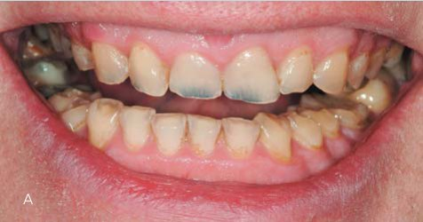
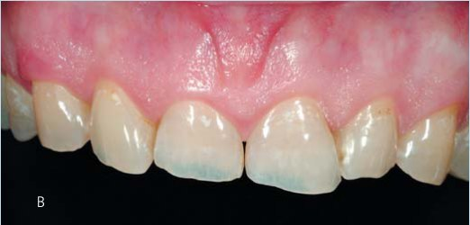
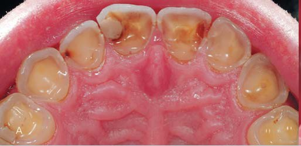
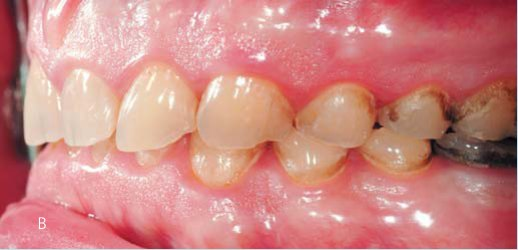
У результаті початковий план повної адгезивної реабілітації ротової порожнини виявився більш інвазивним і дорогим, оскільки планувалося виготовити шість додаткових вінірів на вестибулярні поверхні передніх зубів, а через плановані вініри — накладки для відновлення премолярів верхньої і нижньої щелеп. Проте в процесі лікування план спростився.
У цьому випадку використовувалася класична триетапна техніка. Було знято два альгінатні відбитки і показання лицьової дуги в максимальному міжгорбиковому контакті. Виконано воскове моделювання вестибулярних поверхонь верхніх зубів. Вивчаючи усмішку пацієнта, зубний технік запропонував для досягнення прийнятного естетичного кінцевого результату включити в лікування всі вестибулярні поверхні верхніх зубів, окрім других молярів.
Зрештою всі вестибулярні поверхні були покриті воском і дещо збільшені в об'ємі. Одночасно ріжучі краї і оклюзійна площина були подовжені (перший лабораторний етап) (фото 4).
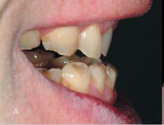
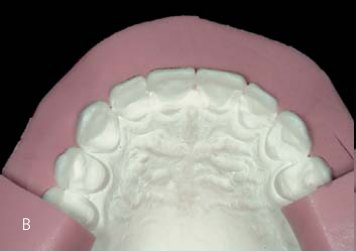
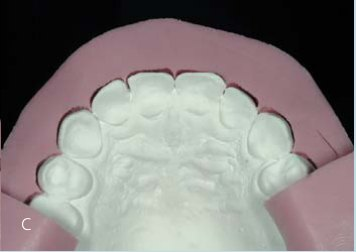
За восковим моделюванням виготовлено силіконовий ключ, і пацієнт був призначений для проведення попереднього композитного моделювання вестибулярних поверхонь верхніх зубів (перший клінічний етап).
Пацієнтові сподобалася його нова усмішка, але лікар відчував, що естетичні запити пацієнта не були основною метою цього лікування (фото 5-7).
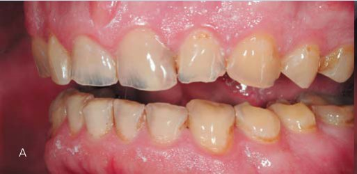
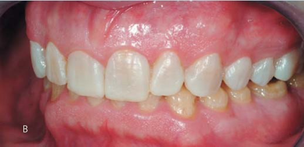
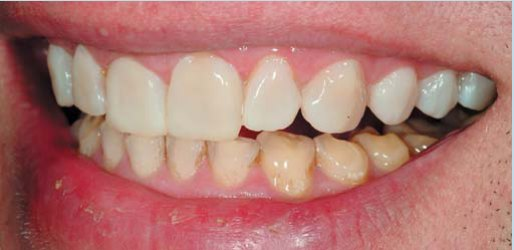
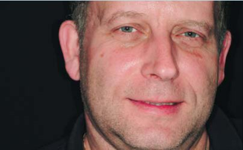
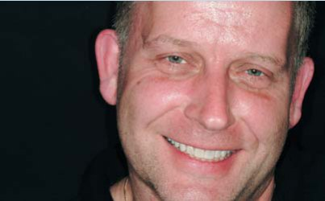
Після першого етапу лікар проаналізував моделі, зіставлені в максимальному горбиковому контакті. Висота збільшення вертикального розміру оклюзії була визначена на такому рівні, щоб була можливість створити достатній міжоклюзійний простір не лише для відновлення піднебінних поверхонь передніх зубів, але й для запечатування оголеного дентину на оклюзійних поверхнях бічних зубів.
Збільшення вертикального розміру оклюзії було обмежене намаганням уникнути надмірного роз'єднання передніх зубів, щоб залишити можливість відтворити контакт передніх зубів піднебінними вінірами. Причому обидві зубні дуги, верхня і нижня, мали бути залучені в цю реабілітацію (двощелепний розподіл).
Зубний технік зробив воскове моделювання поверхонь бічних зубів (два премоляри і перший моляр у кожному секстанті), після чого моделі передали лікарям, які виготовили за ними чотири прозорі силіконові ключі (матеріал Еліт Транспарент, Цермак, БадіаПолесіне) (другий лабораторний етап).
За два тижні пацієнта призначили на двогодинний прийом для виготовлення тимчасових композитних реставрацій бічних зубів безпосередньо в роті у пацієнта (другий клінічний етап). Без проведення анестезії ключі були заповнені підігрітим композитом фірми Мічеріум і введені в ротову порожнину пацієнта (фото 8). Контроль над оклюзією здійснювався досить легко завдяки відсутності анестезії.
Через тиждень було проведено ще один контроль, під час якого пацієнт повідомив, що йому комфортно, незважаючи на збільшення вертикального розміру оклюзії і відкритий прикус у зоні його передніх зубів (фото 9). Згідно з протоколом Женевського Центру з вивчення ерозії, перевірка адекватності збільшення вертикального розміру оклюзії повинна тривати місяць. Упродовж цього часу пацієнт з'являвся для лікування карієсу і захисту пульпи з піднебінної поверхні верхніх передніх зубів.
Під час цього візиту оголений дентин піднебінних поверхонь верхніх передніх зубів було відшліфовано дрібнозернистим кулястим алмазним бором і негайно покрито дентинним адгезивом Оптібонд ФЛ (Керр, Оранж) згідно з інструкцією. Для зміцнення гібридного шару на дентин був нанесений текучий композит (Тетрік Флоу Ті, Івоклар Вівадент) і полімеризований 40 сек (20 сек з покриттям гліцерином).27-31
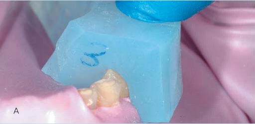
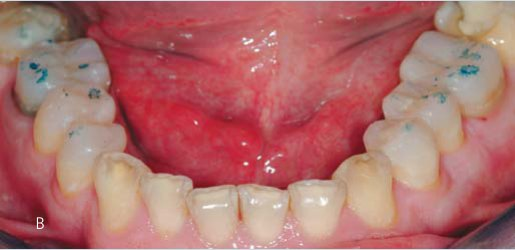
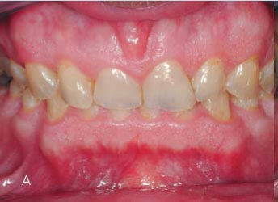
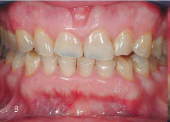
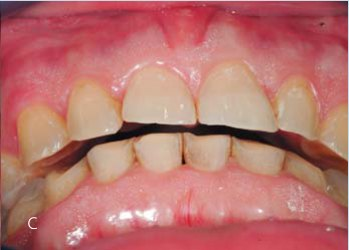
Завдяки створенню відкритого прикусу, лікуванню карієсу і запечатуванню дентину ці зуби стали механічно і біологічно міцнішими.
Через місяць після другого етапу пацієнт був призначений на одногодинний прийом, під час якого було знято полівінілсилоксановий відбиток з верхньої зубної дуги матеріалом Експрес 2 (3М ЕСПЕ) для виготовлення піднебінних вінірів.
Оскільки планувалося виготовлення ще й вестибулярних вінірів, інтерпроксимальні контакти були розкриті за допомогою металевих штрипсів. Спроб видалити емаль без підтримки на ріжучих краях і створити край майбутнього вініра в ділянці шийки не робили, оскільки стирання створило ідеальний уступ і не було необхідності ослаблювати частину емалі ближче до ясен (фото 10). Після відбитку для виготовлення піднебінних вінірів тимчасові реставрації не виготовлялися. Причиною цього є складність ретельного видалення надлишків тимчасового матеріалу з піднебінної поверхні, яке спричинило б запалення ясен, що у свою чергу ускладнило б контроль за сухістю робочого поля у момент фіксації піднебінних вінірів. Інша небезпека — це вірогідність зламу тонких ріжучих країв під час зняття тимчасових реставрацій. Нарешті, мінімальне препарування зуба і негайне покриття оголеного дентину дозволяло нам не захищати дентин, як у випадку з повним покриттям.
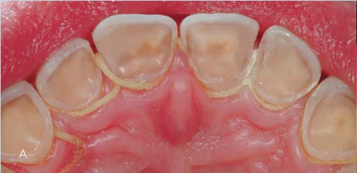
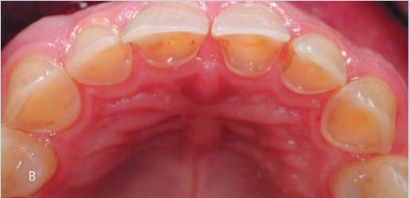
Зубний технік отримав полівінілсилоксановий відбиток верхньої зубної дуги і альгінатний відбиток нижньої зубної дуги. Завдяки передньому шаблону прикусу він встановив моделі у максимальному фісурно-горбиковому контакті. Після цього були виготовлені 6 композитних піднебінних вінірів з матеріалу Міріс (Колтен, Вейлдент) (третій лабораторний етап) (фото 11).
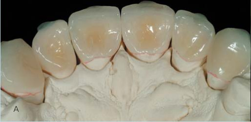
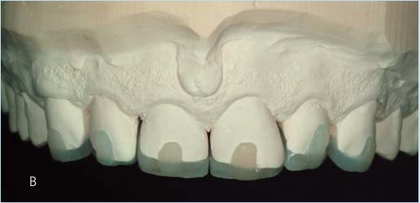
Пацієнт був призначений на двогодинний прийом. Анестезія не була потрібна. До накладання рабердаму проведено примірку піднебінних вінірів в ротовій порожнині з контролем відповідності кольору і рівня вестибулярного переходу. На диво, дуже прозорий колір емалі був добре прихований піднебінними вінірами без надання опаковості новим ріжучим краям. Піднебінні вініри зафіксовані по черзі з використанням рабердаму. Запечатаний дентин з піднебінного боку був оброблений піскоструминно Коджет (27 нм) (3М ЕСПЕ), навколишня емаль протравлена 37% фосфорною кислотою, і нанесений адгезив Оптібонд ФЛ (Керр, Оранж), поки що без полімеризації. Композитні вініри оброблені піскоструминно Коджет і спиртом з ультразвуком. Було нанесено три шари силану (Монобонд плюс, Івоклар Вівадент). Перед почерговою установкою на зуби і фотополімеризацією на реставрації нанесли останній шар адгезиву (Оптібонд ФЛ, Керр, Оранж) без полімеризації і підігрітий композит (Мічеріум ЕсПіЕй, АвегноДжі).
![АВ. Примірка піднебінних вінірів до накладання рабердаму. Для пацієнтів з ушкодженнями класу III за класифікацією АСЕ, яким протипоказані вестибулярні вініри, основною є відповідність кольору між вестибулярною поверхнею, що залишилася, і ріжучими краями піднебінних вінірів. Зверніть увагу, що вся емаль без підтримки залишена інтактною і спроб створити уступ на вестибулярній поверхні не було. Це консервативне положення зберегло оригінальну довжину зуба, але ускладнило поєднання кольору зуба і піднебінних вінірів.](images/vail70-024.jpg)
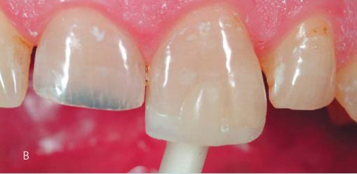
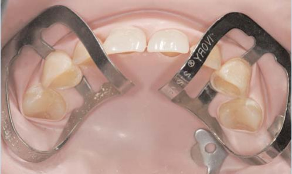
Завдяки наявності композитного «гачка» на рівні ріжучих країв вінірів правильне позиціонування є набагато легшим навіть на «слизьких» піднебінних поверхнях. Згодом гачки видаляють під час шліфування і полірування (фото 13).
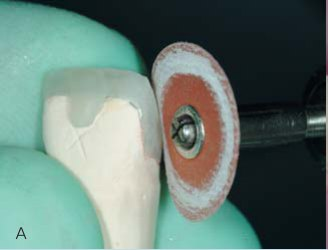
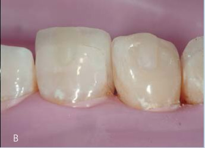
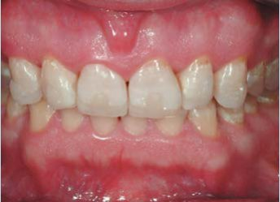
Через два тижні пацієнт повернувся для завершення реставрації вестибулярними вінірами верхніх передніх зубів, але висловив задоволення вже досягнутим результатом. Він пояснив, що хоче зберегти міцність ріжучих країв і не бажає кардинально змінювати зовнішній вигляд своїх зубів. Колір зубів теж перестав турбувати пацієнта, тому він вирішив відмовитися від зовнішнього відбілювання.
Лікар, який стверджував, що було б естетично правильно зробити зуби світлішими і збільшити їх розмір, був здивований, але згодився з пацієнтом у тому, що вестибулярна поверхня відновлених верхніх передніх зубів уже стала досить естетично задовільною і гострої необхідності виготовляти вестибулярні вініри немає. Було вирішено почекати і з'ясувати, чи витримає дуже тонкий ріжучий край композитних вінірів самостійне стискання зубів пацієнтом при функціонуванні.
Після року спостережень пацієнт усе ще залишався задоволеним піднебінними вінірами. Також разом з пацієнтом було змінено план лікування бічних зубів, які вирішено відновити композитними накладками замість керамічних вінірів/накладок.
У новому плані лікування було прийнято рішення не виготовляти вестибулярні вініри на передні зуби, які збільшили б їх в об'ємі, тим паче, що для цього необхідно було б збільшити вестибулярний об'єм бічних зубів. Завдяки тому, що вестибулярні поверхні були залишені як є, відпала необхідність препарувати зуби, як це довелося б робити при виготовленні вестибулярних вінірів/накладок.
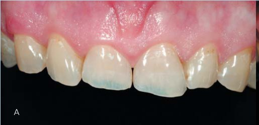
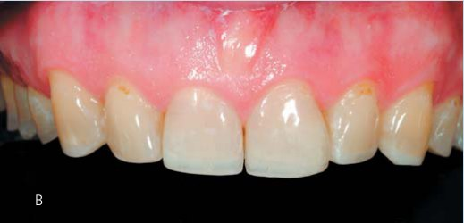
При узгодженні матеріалу з пацієнтом перевага була надана композиту, а не кераміці, внаслідок обмеження оклюзійної товщини, двощелепного розподілу і відсутності препарування зубів. Новий план лікування був прийнятнішим для пацієнта у зв'язку зі зменшенням його загальної вартості. Після завершення лікування пацієнтові була виготовлена капа, і його включили в програму спостереження Женевського Центру з вивчення ерозії.
Після трьох років спостереження піднебінні вініри зарекомендували себе добре. Крайова адаптація не порушена, немає крайового забарвлювання, спостерігалася чудова інтеграція реставрацій. А найголовніше — усі зуби зберегли свою життєздатність.
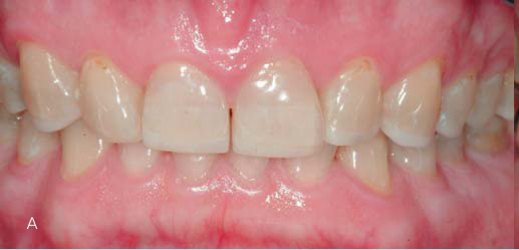
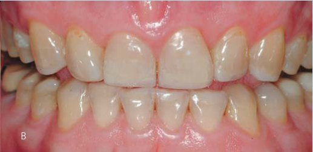
Переклад Романа Савости.
Інтерв'ю з Франческою Вайлаті у цьому ж номері — «Усе можна робити в адгезивному полі. Єдине обмеження — відсутність фантазії».
Література
- Attin T., Filli T., Imfeld C., Schmidlin P.R. Composite vertical bite reconstructions in eroded dentitions after 5•5 years: a case series. J Oral Rehabil. —2012;39(1):73-79.
- Reston E.G, Corba V.D., Broliato G., Saldini B.P., Stefanello Busato A.L. Minimally invasive Intervention in a case of a noncarious lesion and severe loss of tooth structure. Oper Dent. —2012. May-Jun;37(3):324-328.
- Freitas A.C. Jr, Silva A.M., Lima Verde M.A., Orge de Aguiar J.R. Oral rehabilitation of severely worn dentition using an overlay for immediate re-establishment of occlusal vertical dimension. Gerodontology. —2012. Mar;29(1):75-80.
- Bassetti R., Enkling N., Fahrländer F.M., Bassetti M., Mericske-Stern R. Prosthetic rehabilitation of a traumatic occlusion due to bulimia nervosa. Case report. Schweiz Monatsschr Zahnmed. —2012;122(1):27-46.
- Guo J., Reside G., Cooper L.F. Full-mouth rehabilitation of a patient with gastroesophageal reflux disease: a clinical report. J Prosthodont. —2011. Oct;20 suppl 2:9-13.
- Schwarz S., Kreuter A., Rammelsberg P. Efficient prosthodontic treatment in a young patient with long-standing bulimia nervosa: a clinical report. International Journal of Peadiatric Dentistry —2003;13:98-105. J Prosthet Dent. —2011. Jul;106(1):6-11.
- Almeida e Silva J.S., Baratieri L.N., Araujo E., Widmer N. Dental erosion: understanding this pervasive condition. J Esthet Restor Dent. —2011. Aug;23(4):205-216.
- Dietschi D., Argente A. A comprehensive and conservative approach for the restoration of abrasion and erosion. Part II: clinical procedures and case report. Eur J Esthet Dent. —2011. Summer; 6(2):142-159.
- Dietschi D., Argente A. A comprehensive and conservative approach for the restoration of abrasion and erosion. Part 1: concepts and clinical rationale for early intervention using adhesive techniques. Eur J Esthet Dent. –2011. Spring;6(1):20-33.
- De Melo M.A., Passos V.F., Apolonio F.M., Rego R.O., Rodrigues L.K., Santiago S.L. Restoring esthetics in eroded anterior teeth: a conservative multidisciplinary approach. Gen Dent. —2011. Jan-Feb; 59(1):48-52.
Повний список літератури — у редакції.